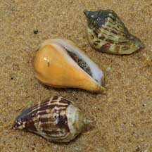
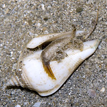
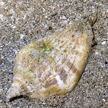

|
|
| shelled snails text index | photo index |
| Phylum Mollusca > Class Gastropoda > Family Strombidae |
| Margined
conch Strombus marginatus robustus Family Strombidae updated Sep 2020 Where seen? This conch with wavy lips is sometimes seen on sandy shores and near seagrasses. Features: 3-5cm long. Shell thick heavy, lip slightly flared. Sometimes with a low ridge on side opposite to the flared lip. Upperside smooth with a pattern of brown bars, sometimes plain, sometimes covered with encrusting organisms. Shell opening pearly white. Body mottled. Large eyes on eyestalks, each eyestalk has a tentacle, the purpose of which is not known. Like other conch snails, it hops using the knife-like operculum at the tip of a long muscular foot. |
|
 St. John's Island, Jul 09 |
 Pulau Semakau, Aug 11 |
 |
| Human uses: It is locally collected for food and the shell trade in some parts of our region. |
| Margined conch on Singapore shores |
On wildsingapore
flickr
|
| Other sightings on Singapore shores |
| |
|
shared by Neo Mei Lin on her blog |
|
Links
References
|